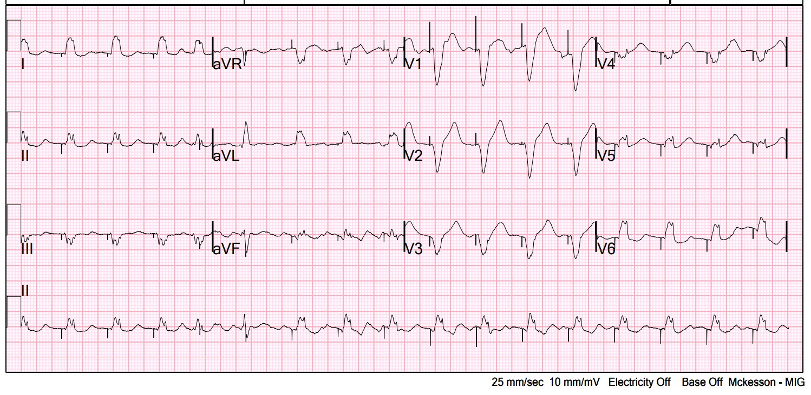
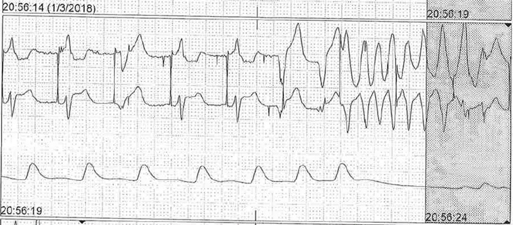
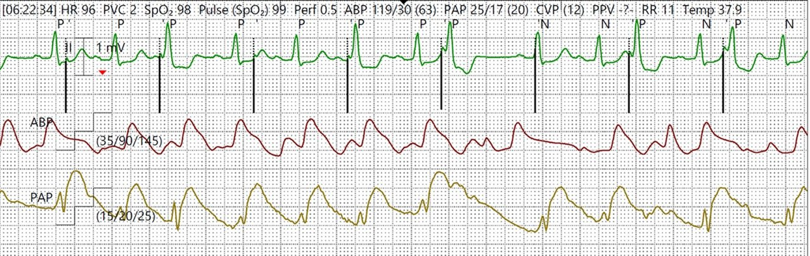
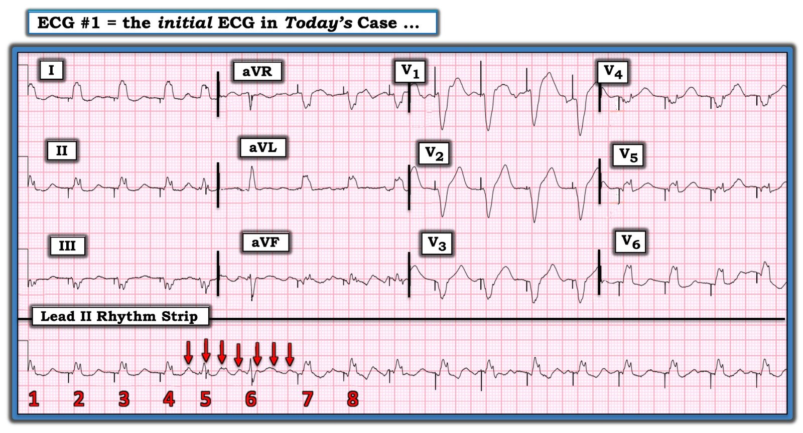

19/10/2022 — Máy tạo nhịp qua tĩnh mạch đặt cấp cứu tại khoa cấp cứu (ED) có vẻ hoạt động hoàn hảo. Điều gì có thể trục trặc?
Bản dịch tiếng Việt của bài "Emergency (ED placement) Transvenous Pacer appears to be working perfectly. What might go wrong?" – Dr. Smith’s ECG Blog. Giữ nguyên toàn bộ 5 hình ảnh của bản gốc.
Cảm ơn các bác sĩ điện sinh lý của chúng tôi, Omar Iqbal và Rehan Karim, về các dải nhịp dưới đây và những giải thích mà tôi sẽ trình bày trong bài này.
Một bệnh nhân bị blốc AV độ 3 tại khoa cấp cứu (ED). Các bác sĩ cấp cứu đã đặt máy tạo nhịp qua tĩnh mạch (transvenous pacer) ngay tại khoa cấp cứu. Đã đạt được bắt nhịp và một điện tâm đồ 12 chuyển đạo được ghi lại:


Bạn thấy gì ở đây và biến chứng nào có thể xảy ra?
Nhát thứ 5 (nhát có gai tạo nhịp nhìn thấy thứ 4) đến sớm (PAC hoặc PVC), và gai tạo nhịp xuất hiện SAU khi QRS đã khởi đầu. (Ken Grauer chỉ ra rằng nhát thứ 5 này có vẻ là do một nhát nhĩ đến sớm và các nhát sớm này tiếp diễn thêm vài nhát, gợi ý một loạt ngắn nhịp nhanh nhĩ.)
Nhát thứ 6 (nhát có gai tạo nhịp nhìn thấy thứ 5) có gai tạo nhịp nằm giữa QRS.
Việc gai tạo nhịp rơi vào giữa nhát tự thân thứ 5 và thứ 6 có ý nghĩa gì?
Điều này có nghĩa là máy tạo nhịp hoặc đang không “nhận cảm” được các nhát tự thân (thường do vị trí đặt chưa thật hoàn hảo), hoặc đang ở chế độ “không đồng bộ” (asynchronous), trong đó máy sẽ phát xung bất kể các nhát tự thân (máy được cài đặt sao cho dù có nhận cảm được nhát tự thân, máy vẫn tạo nhịp bất kể).
Tạo nhịp không đồng bộ có vẻ là cài đặt an toàn, NGOẠI TRỪ việc nó có nghĩa là máy tạo nhịp có thể phát xung trên sóng T, điều có thể dẫn tới rung thất.
Các bác sĩ điện sinh lý của chúng tôi đưa ra một ví dụ về điều này ở đây:


Chế độ “không đồng bộ” có nghĩa là máy tạo nhịp sẽ tạo nhịp bất kể các nhát tự thân đang diễn ra thế nào. Do đó, máy có thể tạo nhịp trên sóng T, như trên.
Nhưng điều này cũng có thể xảy ra ở chế độ “theo nhu cầu” (demand) nếu máy tạo nhịp mất nhận cảm.
Chế độ theo nhu cầu là khi máy tạo nhịp đang nhận cảm. Nếu nhận cảm được một nhát tự thân, máy sẽ không tạo nhịp trừ khi không nhận cảm được một nhát tự thân khác trong một khoảng thời gian xác định. Ví dụ, nếu tần số được cài đặt 60 nhát/phút ở chế độ tạo nhịp theo nhu cầu, máy sẽ chờ 1 giây trước khi tạo nhịp. Nếu nhận cảm được một nhát trong vòng dưới 1 giây, máy sẽ không tạo nhịp. Nếu không nhận cảm được nhát nào, máy sẽ tạo nhịp.
Thông thường, mất nhận cảm là do vị trí đặt không tốt, và trong tình huống đó máy tạo nhịp cũng có thể không tạo nhịp được.
Tuy nhiên, máy tạo nhịp có thể mất nhận cảm dù vẫn tạo nhịp được. Trong tình huống đó, cũng có thể xảy ra việc tạo nhịp nguy hiểm trên sóng T.
Máy tạo nhịp trong dải nhịp dưới đây KHÔNG ở chế độ không đồng bộ; nó ở chế độ theo nhu cầu. Đơn giản là máy mất nhận cảm dù vẫn tạo nhịp được:


Tất cả các gai tạo nhịp ở đây, trừ gai #6, đều không phù hợp; tất cả các gai khác lẽ ra đã phải bị ức chế. Gai #6 có chờ trọn một giây trước khi phát, nhưng nó chờ một giây sau một nhát tạo nhịp; có vẻ như khoảng chờ phù hợp đó CHỈ là do không có nhát tự thân nào xen vào mà lẽ ra máy cũng sẽ không nhận cảm được!
Máy không nhận cảm được tất cả các nhát tự thân (nhát 1, 2, 4, 5, 7, 10, 12, 14)
Nhát #9 (gai tạo nhịp #6) xảy ra đồng thời với gai, do đó trông giống một nhát tự thân.
Các nhát 3, 6, 8, 11, 13 là nhát tạo nhịp.
Có 8 gai tạo nhịp: các gai số 2, 4, 5, 7 và 8 bắt nhịp
Các gai tạo nhịp 1, 3 không bắt nhịp vì chúng nằm giữa QRST. Gai tạo nhịp thứ 3 rơi thẳng lên sóng T (dù không rơi vào phần sau của sóng T)!

===================================
BÌNH LUẬN CỦA TÔI, bởi KEN GRAUER, MD (19/10/2022):
===================================
Lĩnh vực tạo nhịp tim tiếp tục có những tiến bộ đáng kinh ngạc về độ chính xác và độ tinh vi. Là người không thường xuyên xử lý sự cố máy tạo nhịp — tôi hoàn toàn thừa nhận mình chưa phải là chuyên gia trong công việc này. Tuy vậy, các bác sĩ làm công tác cấp cứu sẽ thỉnh thoảng gặp các vấn đề về máy tạo nhịp — điều này nhấn mạnh tầm quan trọng của bài blog hôm nay.
BS. Smith trình bày điện tâm đồ của một bệnh nhân được đặt máy tạo nhịp qua tĩnh mạch cấp cứu vì blốc AV độ 3. Để rõ ràng — tôi đã sao lại và đánh dấu bản ghi đó trong Hình 1.
- BS. Smith đặt câu hỏi: biến chứng nào có thể phát sinh từ những gì bạn thấy trong Hình 1?


ĐIỂM THEN CHỐT (PEARL) #1: Phần lớn thời gian máy tạo nhịp đúng! Chân lý đơn giản này đã giúp ích tôi rất nhiều trong nhiều năm qua. Dù đúng là máy tạo nhịp có thể và thực sự bị trục trặc (và khi điều đó xảy ra — chúng ta cần nhận ra nó!) — phần lớn thời gian, khi tôi thấy điều gì đó trên bản ghi tạo nhịp mà tôi không hiểu — cuối cùng tôi sẽ biết được một “chức năng đặc biệt” tinh vi, mang tính sinh lý nào đó giải thích cho dấu hiệu điện tâm đồ mà tôi không hiểu. Vì vậy — tôi bắt đầu từ quan điểm nghi rằng “máy tạo nhịp có lẽ đúng” — và tập trung công sức để tìm hiểu TẠI SAO máy tạo nhịp có thể đúng.
- XIN NHẤN MẠNH — Rõ ràng có những lúc máy tạo nhịp sẽ trục trặc. Máy tạo nhịp không phải lúc nào cũng “đúng”. Nhưng khi toàn bộ một bản ghi chuyển đạo dài, trừ một đoạn nhỏ, cho thấy nhận cảm và bắt nhịp phù hợp — có thể có một lý do sinh lý (và có lợi) cho đoạn nhịp nhỏ đang làm tôi bối rối đó.
ĐIỂM THEN CHỐT (PEARL) #2: Tôi luôn muốn cố gắng xác định nhịp nền trên một bản ghi tạo nhịp. Trong ca hôm nay — chúng ta được cho biết bệnh nhân này được tạo nhịp cấp cứu vì blốc AV hoàn toàn — nhưng đó không phải là nhịp nền mà tôi thấy trong Hình 1 (và tôi tin rằng manh mối này giải thích cách máy tạo nhịp đã đáp ứng).
SUY NGHĨ CỦA TÔI về điện tâm đồ #1:
4 nhát đầu tiên trên dải nhịp chuyển đạo II dài của Hình 1 — là nhát tạo nhịp. Chúng ta thấy các gai tạo nhịp đều với tần số 100 lần/phút — và mỗi gai được theo sau bởi một phức bộ QRS tạo nhịp với cùng một khoảng ngắn sau gai.
- Nhát #5 đến sớm. Thay vì đứng trước là một gai tạo nhịp (như ở các nhát tạo nhịp #2,3,4) — một gai tạo nhịp đúng lúc lại xuất hiện ở giữa nhát #5. Tại sao điều này xảy ra? Nếu máy tạo nhịp được cài ở chế độ theo nhu cầu (Demand Mode) — thì chẳng phải máy tạo nhịp lẽ ra đã bị ức chế bởi nhát #5 đến hơi sớm hay sao?
Tôi tin câu trả lời nằm ở việc xác định nhịp nền.
- Rõ ràng — khó xác định hoạt động nhĩ trên phần lớn dải nhịp chuyển đạo II dài trong Hình 1 (do sự kết hợp giữa nhiễu và sóng T xuất hiện muộn của các nhát tạo nhịp). Dù vậy — tôi tin rằng các mũi tên MÀU ĐỎ cách đều nhau làm nổi bật 7 sóng lệch nhĩ liên tiếp thuộc một loạt ngắn ATach hoặc AFlutter.
- Khi cố gắng hiểu “máy tạo nhịp có thể đúng NHƯ THẾ NÀO” — tôi nghĩ hợp lý khi giả định rằng lý do nhát #5 xuất hiện sớm hơn dự kiến — là nhát nhĩ thứ 1 của loạt này ( = mũi tên ĐỎ thứ 1) được dẫn truyền xuống!
- Thay vì giả định máy tạo nhịp trục trặc — gai tạo nhịp thứ 4 (xuất hiện ở giữa phức bộ QRS thứ 5) — có thể đơn giản là không có đủ thời gian để bị ức chế. Kết quả là nhát #5 là một nhát hỗn hợp (fusion beat), biểu hiện hình dạng QRS có đặc điểm trung gian giữa nhát dẫn truyền tự phát và nhát tạo nhịp.
- QRS của nhát #6 cũng trông khác các nhát tạo nhịp. Một lần nữa — gai tạo nhịp thứ 5 rơi vào giữa phức bộ QRS thứ 6 này với cùng tần số tạo nhịp 100 lần/phút được duy trì suốt bản ghi. Hãy chú ý hình dạng QRS của nhát #6 còn khác các nhát tạo nhịp nhiều hơn cả nhát #5! (Điều này thấy rõ nhất khi so sánh hình dạng QRS của nhát #6 ở các chuyển đạo aVR,aVL,aVF ghi đồng thời với các nhát tạo nhịp ở những chuyển đạo này). Nhát #6 là một nhát hỗn hợp (fusion beat). Lý do nó cũng xuất hiện hơi sớm hơn dự kiến — là có vẻ nó cũng được dẫn truyền (bởi sóng P ở mũi tên ĐỎ thứ 3 hoặc thứ 4).
- Tôi tin loạt ATach (hoặc AFlutter) kết thúc sau mũi tên ĐỎ thứ 7 — sau đó các gai tạo nhịp liên tục đúng lúc giành lại bắt nhịp đều đặn ở tần số 100 lần/phút.
- ĐIỀU CỐT LÕI: Mặc dù nhận cảm sai hoặc dùng chế độ không đồng bộ là những lý do có thể khiến gai tạo nhịp xuất hiện bất ngờ ở giữa phức bộ QRS — tôi không nghĩ điều đó đang xảy ra ở đây. Thay vào đó — tôi nghi rằng nhịp nền đã thay đổi thành một loạt ngắn ATach (hoặc AFlutter). Dẫn truyền tự phát của các xung nhĩ ở muộn trong chu kỳ có thể giải thích vì sao gai tạo nhịp thứ 4 và thứ 5 trong ví dụ hôm nay xuất hiện ở giữa phức bộ QRS. Tôi không nghĩ máy tạo nhịp đã “sai”. Thay vào đó — đơn giản là tôi không nghĩ máy tạo nhịp có đủ cơ hội để bị ức chế.
- Với những ai muốn tìm hiểu thêm về tạo nhịp — tôi thích bài tổng quan PDF về Kiến thức cơ bản về tạo nhịp của University of Ottawa Heart Institute (Viện Tim Đại học Ottawa) — và bản tóm tắt dễ đọc về Xử lý sự cố máy tạo nhịp tạm thời trên Life-In-The-Fast-Lane ngày 3 tháng Mười Một năm 2020. — và Bài ôn tập trên YouTube năm 2021 của ICU Advantage về “Máy tạo nhịp tạm thời: Các chế độ và cài đặt cơ bản” (Temporary Pacemakers: Modes and Basic Settings).